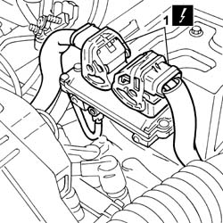
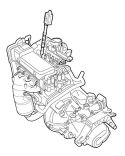

0510A10 cylinder compression - check for loose spark plugs or injectors
- Path
- Procedures > 05 DIAGNOSTICS > 0510 VARIOUS CONTROLS > 0510A checks on engine > 0510A10 cylinder compression - check for loose spark plugs or injectors
- Kind
- repair procedure (removal / refitting; the operation number is the code)
- Applies to
- all engines; all production periods
- Interactive page
- https://sloeber94.github.io/elrnDB-fPnd/en/#/2752390
Applies to: engines: 1.1, 1.2 8v; all production periods
Disconnect the battery negative terminal.
1. Disconnect the electrical connections for the engine management control unit.
 | Name | Connector |
|---|---|---|
1 | Engine management control unit | M10A |
| Name | Connector |
|---|---|---|
1 | Engine management control unit | M10B |

Applies to: engines: 1.3 JTD 16v; all production periods
Disconnect the electrical connections for the engine management control unit ( 1060G80 ds electric injection control unit - r r ).
| Name | Connector |
|---|---|---|
- | Engine management control unit | M10 |
Remove one fuel injector ( 1060F10 fuel injectors ).
Fit the dummy injector in the seat of the removed injector.
 | Name | Country |
|---|---|---|
1 | Dummy injector | 1.870.900.500 |
Insert the test instrument in the seat of the dummy injector.
Via the starter motor, make the engine execute a few revolutions while holding down the accelerator and clutch pedals.
Repeat the test on the remaining cylinders, making sure to reset the instrument each time.
Check that the cylinders' pressure readings do not differ excessively.
Connect the electrical connection for the engine management control unit ( 1060G80 ds electric injection control unit - r r ).
| Name | Connector |
|---|---|---|
- | Engine management control unit | M10 |
Applies to: engines: 1.1, 1.2 8v; all production periods
Remove one of the spark plugs.
1. Insert the test instrument into the seat of the spark plug.

Applies to: engines: 1.1, 1.2 8v; all production periods
Via the starter motor, make the engine execute a few revolutions while holding down the accelerator and clutch pedals.
Repeat the test on the remaining cylinders, making sure to reset the instrument each time.
Check that the cylinders' pressure readings do not differ excessively.
Fit the spark plug removed previously.
Connect the electrical connections for the engine management control unit.
| Name | Connector |
|---|---|---|
- | Engine management control unit | M10A |
| Name | Connector |
|---|---|---|
- | Engine management control unit | M10B |
Connect the battery negative terminal.